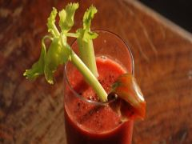

~TheSavoury~
Ingredients
The world's most complex cocktail? Before saying that, try to make bloody mary with this easy recipe.
Making this cocktail is relatively simple.
Pour the vodka into a shaker along with the tomato juice and lemon juice.
Shake vigorously and add Tabasco, the Worcester sauce, salt and pepper.
In case you don’t have a cocktail shaker, stir the ingredients slowly in the same order: it’ll take more time, but the final result will be the same.
Along with the classic celery garnish, you can also add a carrot, a mint branch or other vegetables.
If you serve the drink in a tall tumbler, add a few ice cubes to the bottom of the glass.